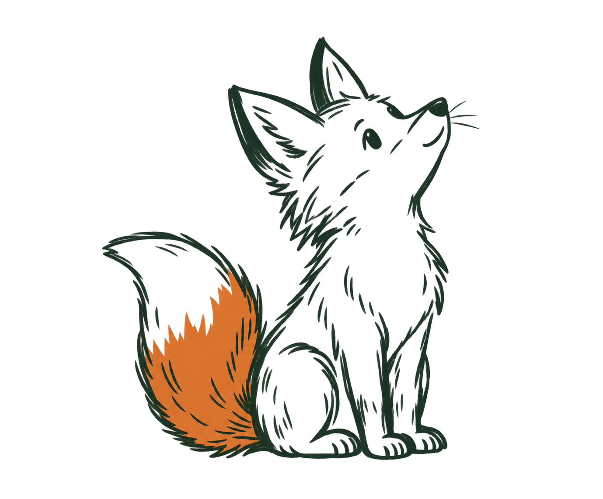
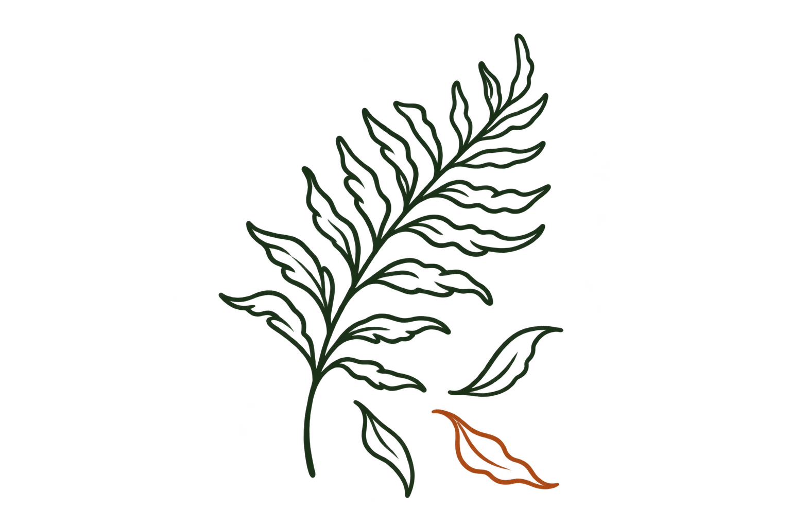
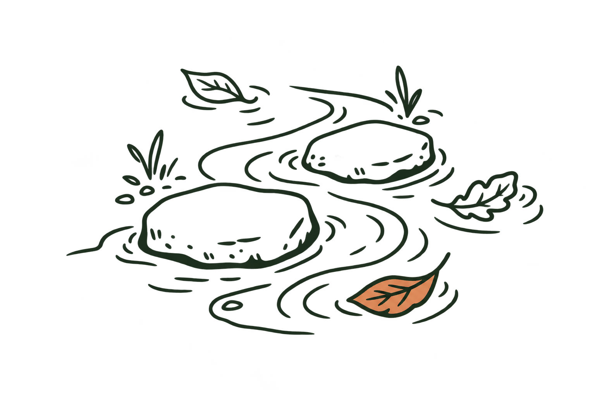

02 / curiosityFollow
a small invitation to look up
A pocket-sized collection of prompts for the curious and slightly screen-tired. Draw one, take it with you, and let the world do the rest.

NOafter rain
look close
Find the greenest thing near you.
Stay with it for one full minute.
the collection
Not a checklist. Just a little friction against autopilot.


built for the real world
These prompts are generated locally, with an open, swappable model at the center. No account, no location trail, no social layer. Save a note if you like — then put your phone away.
OPEN MODEL READY ●